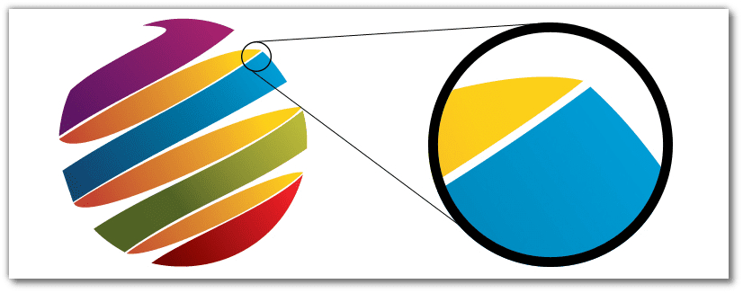
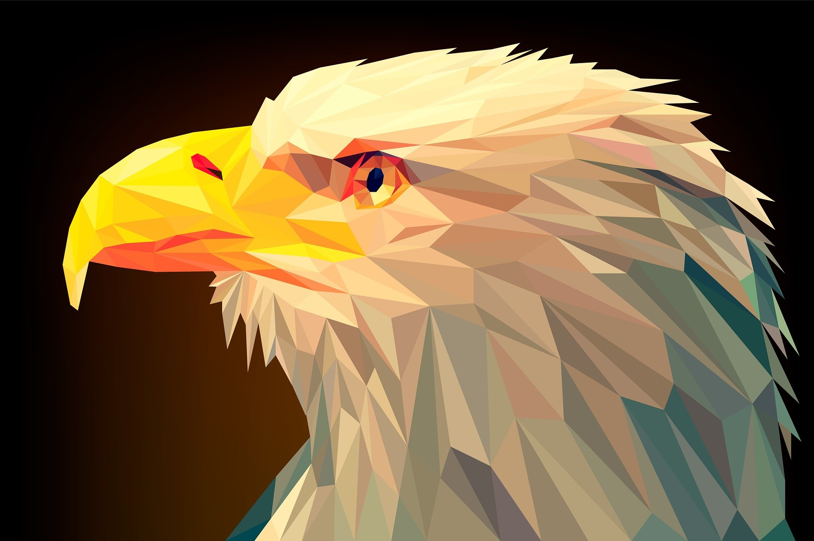

Co to grafika wektorowa?
Grafika wektorowa – jeden z dwóch podstawowych rodzajów grafiki komputerowej, w której obraz opisany jest za pomocą figur geometrycznych lub brył geometrycznych, umiejscowionych w matematycznie zdefiniowanym układzie współrzędnych, odpowiednio dwu- lub trójwymiarowym. Znanymi rozszeżeniami grafiki wektorowej są np. SVG, AI, PDF, CDR a programami do ich edycji Adobe Ilustrator, InkSpace, CorelDraw itp.
Obiekty w grafice wektorowej
Druga nazwa grafiki wektorowej – grafika obiektowa – związana jest z faktem, iż obraz opisany jest za pomocą tzw. obiektów, które zbudowane są z podstawowych elementów nazywanych prymitywami, czyli prostych figur geometrycznych takich jak odcinki, krzywe, okręgi, wielokąty. Każdy z prymitywów opisywany jest za pomocą parametrów, np. w przypadku odcinka – współrzędnych jego końców, a w przypadku okręgu – współrzędnych środka i długości promienia. Obiekty takie mają także określone atrybuty mówiące np. o grubości i kolorze linii, kolorze wypełnienia figury lub wypełnieniu niejednolitym, jak wypełnienie gradientem albo wzorem, albo stopniu przezroczystości. Atrybuty zależą głównie od stosowanego standardu opisu grafiki wektorowej.

Operacje w grafice wektorowej
W przeciwieństwie do grafiki rastrowej, grafika wektorowa jest grafiką w pełni skalowalną, co oznacza, iż obrazy wektorowe można nieograniczenie powiększać oraz zmieniać ich proporcje bez uszczerbku na jakości. Ma to swoje uzasadnienie w matematycznym opisie elementów (prymitywów), dlatego też obraz może być wyświetlony w maksymalnej dostępnej rozdzielczości dla danego ekranu czy wydruku. Sama jakość obrazu uzależniona jest wyłącznie od dokładności opisu obrazu za pomocą prymitywów: czarne włosy rysowanej postaci można określić jako zamkniętą krzywą wypełnioną na czarno, choć można też opisać każdy włos krzywą o względnie niewielkiej grubości i czarnym kolorze.